Content from Data Visualization Now
Last updated on 2026-04-09 | Edit this page
Learning from the Innovations of W.E.B. Du Bois
This content is also available in Google Slides that can be copied and edited.
Overview
Questions
- How can data visualization and creativity help answer important scientific questions?
- Why did data visualization become predominant in the social sciences earlier than for physical and natural sciences?
- How did Du Bubois use data visualization to challenge false biological theories of racial inequality?
- How did team science help Du Bois’ team to create impactful visualizations for the 1900 Paris exposition?
Objectives
Understand how data visualization promotes scientific discovery.
Explain early innovations in data visualization by W.E.B. Du Bois and other Black and women scientists in his Lab.
Analyze the appropriate types of data visualization charts for different kinds of measurements, relationships, and scientific findings.
Engage in a creative process of data visualization in the style of W.E.B. Du Bois, by applying techniques by hand and with statistical software.
Visualizations Help Formulate New Hypotheses
If I can’t picture it, I can’t understand it. – Albert Einstein
The first thing scientists want to do is understand an issue correctly. Visualizing data with charts, in contrast to tables, helps scientists understand data because:
It is often difficult for people to view a large dataset in a table comprehensively.
People are able to identify concrete patterns and associations more easily in data visualizations.
Why Communicate Through Visualizations?
Another thing scientists need to do is to communicate their findings effectively. Visualizing data is important to scientific communication because:
Scientific discovery requires communicating our ideas and evidence to other scientists who can challenge or build on our findings.
Charts, graphs, and other visuals can clarify associations between two or more things.
For example, health researcher Florence Nightingale used data visualization early on to communicate scientific findings in ways that the public and policymakers could use to save lives.
Why the History of Data Visualization Matters Now
The social scientist W.E.B. Du Bois provided one of the earliest models for effectively developing data visualizations, demonstrating how science matters for the most critical material and moral issues of the day
What Motivated DuBois?
Du Bois cared about the truth. He lived during a time when biological explanations were popular among scientist to explain racial inequality.
Du Bois asked, instead, how discriminatory policies and the material consequences of slavery created unequal outcomes in wealth, literacy, and wellbeing. Du Bois and the Atlanta University Laboratory developed new questions for the US Census and conducted scientific surveys of the population. His Lab included investigators of different racial/ethnic backgrounds and it included women, which was not the norm at that time.
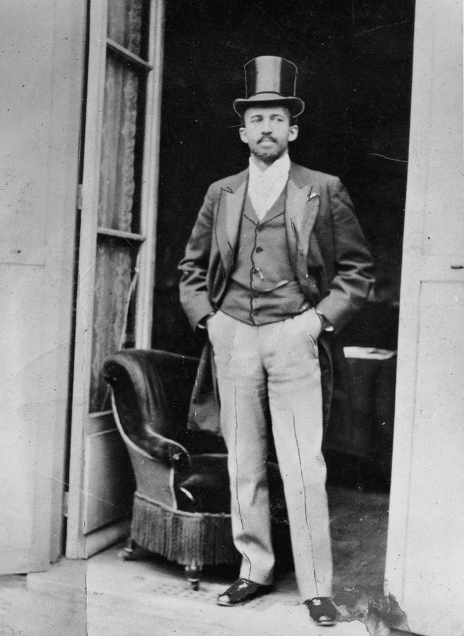
The figures show Thomas Calloway, the oranizer of the “Exhibition of the American Negro”, [Du Bois during the Paris Exposition in 1900, and Atlanta University Students, circa 1900.
Data Visualization as a Scientific Concern for the Du Bois Lab
The Du Bois Lab found evidence to refute theories that falsely claimed inherent biological differences between races.
The Du Bois Lab used creative visualizations to help their team work with new data, make new connections, and to ask critical questions about the objects of study
The Du Bois Lab communicated their evidence and arguments using data visualization that could be understood by wide audiences.
Communicating Science to the Public: The 1900 Paris Exposition
The 1900 World Fair in Paris provided a venue for Du Bois to challenge erroneous theories about racial difference and inequality. The exposition showcased the latest scientific discoveries and inventions to 50 million attendees from around the world.
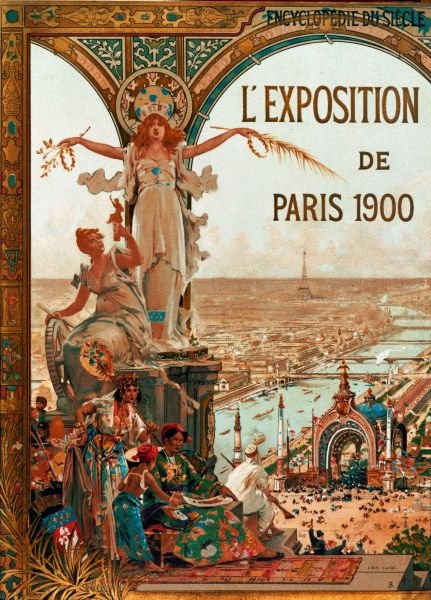
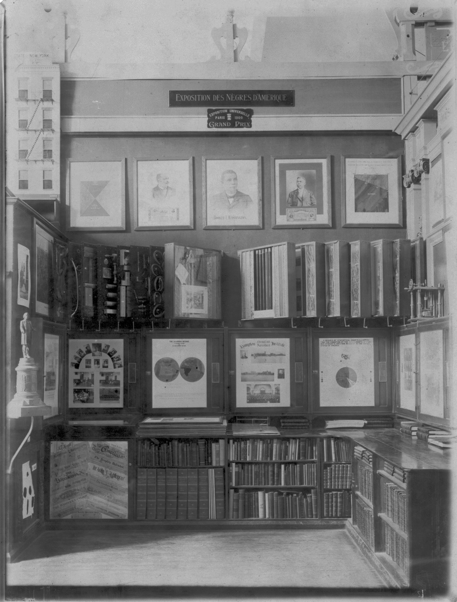
Motivation: What could a scientist do?
Overview
Questions
What could Du Bois do as a scientist to challenge widely believed but false theories of racial inequality?
How could Du Bois best present his ideas and evidence at the Paris Exposition with the technologies available to him?
What could you do today as a scientist to challenge theories about how a phenomenon operates that might be wrong?
In your potential career, how might you visualize data?
Objectives
Understand how data visualization promotes scientific discovery.
Explain early innovations in data visualization by W.E.B. Du Bois and other Black and women scientists in his Lab.
Analyze the appropriate types of data visualization charts for different kinds of measurements, relationships, and scientific findings.
Engage in a creative process of data visualization in the style of W.E.B. Du Bois, by applying techniques by hand and with statistical software.
Turning Data into Art

The Du Bois Lab creatively used charts to depict data about racial inequality.
This helped them show, for example, that when the US government ended bans on Black literacy in the South after Emancipation, illiteracy declined sharply.
The Lab even found that Black illiteracy had declined to lower levels than found in some parts of Europe where conditions of serfdom kept illiteracy high into the late 1800s.
Combining Different Art Forms
The Du Bois Lab used a range of charts that combined different kinds of data with visual art, including maps, photographs, and drawings, to detail change over time.


Praised and Preserved
What we remember and praise, we preserve. These charts have been praised for their ability to draw in viewers. The charts are also preserved in the Library of Congress. Fisk University also houses an archive of Du Bois data visualizations.

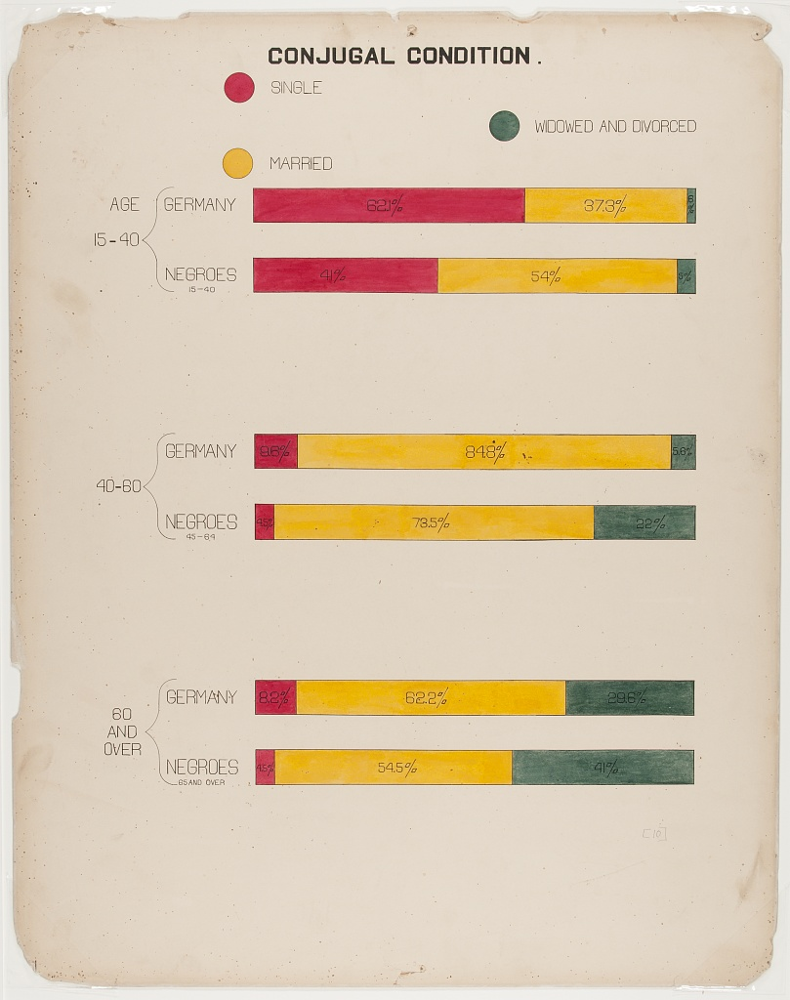
Recap (Overall Learning Objectives)
The central place of data visualizations in the process of scientific discovery and in communicating those discoveries. The history of the DuBois Lab exemplifies this.
It matters which type of chart or graph is used to depict a relationship, a cause, or a process. Some work better than others.
Science requires creativity for discovery. Data visualizations help communicate relevant scientific findings to audiences effectively.
Exercise 1
Why do you think Du Bois created a series of graphs and data visualizations of Black life for the exposition?
Why visualizations instead of a written report?
Du Bois used rigorous yet accessible methods to challenge subsequently discredited claims associated with scientific racism that devalued and assumed Black communities as inferior. The visualizations helped show some of the systemic barriers impeding the progress for black Americans as compared to a deficit approach that would suggest black people were somehow innately less capable. This is a paradigm shift in showing how social science can work together with other STEM fields to produce the most accurate science and impressive visualizations.
Discussion
What effect did the venue have on the design of the visuals?
- This is a place for writing key points that students have learned in this episode.
Why do you think Du Bois created a series of graphs and data visualizations of Black life for the exposition?
Why visualizations instead of a written report?
What effect did the venue have on the design of the visuals?
References
(Paris Exposition of 1900 (Exposition Universelle)) [https://en.wikipedia.org/wiki/Exposition_Universelle_(1900)]
(Black America, 1895) [https://publicdomainreview.org/essay/black-america-1895]
(Plessy v. Ferguson) [https://www.britannica.com/event/Plessy-v-Ferguson-1896]
(The Philadelphia Negro) [https://www.google.com/books/edition/_/sqwJAAAAIAAJ]
(Wilmington Insurrection of 1898) [https://en.wikipedia.org/wiki/Wilmington_insurrection_of_1898]
(The Lynching of Sam Hose) [https://en.wikipedia.org/wiki/Lynching_of_Sam_Hose]
Content from Using R with R Studio
Last updated on 2026-04-08 | Edit this page
This episode provides an introduction to using R with R studio. It was created by the maintainers of the R for Social Scientists Data Carpentries lesson.
Learners can skip this lesson if they are already familiar with R and R studio or plan to do the coding exercises for this lesson in Jupyter Lab.
Overview
Questions
- How to find your way around RStudio?
- How to interact with R?
- How to manage your environment?
- How to install packages?
Objectives
- Install latest version of R.
- Install latest version of RStudio.
- Navigate the RStudio GUI.
- Install additional packages using the packages tab.
- Install additional packages using R code.
What is R? What is RStudio?
The term “R” is used to refer to both the programming
language and the software that interprets the scripts written using
it.
RStudio is currently a very popular way to not only write your R scripts but also to interact with the R software. To function correctly, RStudio needs R and therefore both need to be installed on your computer.
To make it easier to interact with R, we will use RStudio. RStudio is the most popular IDE (Integrated Development Environment) for R. An IDE is a piece of software that provides tools to make programming easier.
You can also use the R Presentations feature to present your work in an HTML5 presentation mixing Markdown and R code. You can display these within R Studio or your browser. There are many options for customising your presentation slides, including an option for showing LaTeX equations. This can help you collaborate with others and also has an application in teaching and classroom use.
Why learn R?
R does not involve lots of pointing and clicking, and that’s a good thing
The learning curve might be steeper than with other software but with R, the results of your analysis do not rely on remembering a succession of pointing and clicking, but instead on a series of written commands, and that’s a good thing! So, if you want to redo your analysis because you collected more data, you don’t have to remember which button you clicked in which order to obtain your results; you just have to run your script again.
Working with scripts makes the steps you used in your analysis clear, and the code you write can be inspected by someone else who can give you feedback and spot mistakes.
Working with scripts forces you to have a deeper understanding of what you are doing, and facilitates your learning and comprehension of the methods you use.
R code is great for reproducibility
Reproducibility is when someone else (including your future self) can obtain the same results from the same dataset when using the same analysis.
R integrates with other tools to generate manuscripts from your code. If you collect more data, or fix a mistake in your dataset, the figures and the statistical tests in your manuscript are updated automatically.
An increasing number of journals and funding agencies expect analyses to be reproducible, so knowing R will give you an edge with these requirements.
To further support reproducibility and transparency, there are also packages that help you with dependency management: keeping track of which packages we are loading and how they depend on the package version you are using. This helps you make sure existing workflows work consistently and continue doing what they did before.
Packages like renv let you “save” and “load” the state of your project library, also keeping track of the package version you use and the source it can be retrieved from.
R is interdisciplinary and extensible
With 10,000+ packages that can be installed to extend its capabilities, R provides a framework that allows you to combine statistical approaches from many scientific disciplines to best suit the analytical framework you need to analyze your data. For instance, R has packages for image analysis, GIS, time series, population genetics, and a lot more.
R works on data of all shapes and sizes
The skills you learn with R scale easily with the size of your dataset. Whether your dataset has hundreds or millions of lines, it won’t make much difference to you.
R is designed for data analysis. It comes with special data structures and data types that make handling of missing data and statistical factors convenient.
R can connect to spreadsheets, databases, and many other data formats, on your computer or on the web.
R produces high-quality graphics
The plotting functionalities in R are endless, and allow you to adjust any aspect of your graph to convey most effectively the message from your data.
R has a large and welcoming community
Thousands of people use R daily. Many of them are willing to help you through mailing lists and websites such as Stack Overflow, or on the RStudio community. Questions which are backed up with short, reproducible code snippets are more likely to attract knowledgeable responses.
Not only is R free, but it is also open-source and cross-platform
Anyone can inspect the source code to see how R works. Because of this transparency, there is less chance for mistakes, and if you (or someone else) find some, you can report and fix bugs.
Because R is open source and is supported by a large community of developers and users, there is a very large selection of third-party add-on packages which are freely available to extend R’s native capabilities.
ERROR
Error in `knitr::include_graphics()`:
! Cannot find the file(s): "fig/r-manual.jpeg"ERROR
Error in `knitr::include_graphics()`:
! Cannot find the file(s): "fig/r-automatic.jpeg"RStudio extends what R can do, and makes it easier to write R code and interact with R. Left photo credit; Right photo credit.
A tour of RStudio
Knowing your way around RStudio
Let’s start by learning about RStudio, which is an Integrated Development Environment (IDE) for working with R.
The RStudio IDE open-source product is free under the Affero General Public License (AGPL) v3. The RStudio IDE is also available with a commercial license and priority email support from RStudio, Inc.
We will use the RStudio IDE to write code, navigate the files on our computer, inspect the variables we create, and visualize the plots we generate. RStudio can also be used for other things (e.g., version control, developing packages, writing Shiny apps) that we will not cover during the workshop.
One of the advantages of using RStudio is that all the information you need to write code is available in a single window. Additionally, RStudio provides many shortcuts, autocompletion, and highlighting for the major file types you use while developing in R. RStudio makes typing easier and less error-prone.
Getting set up
It is good practice to keep a set of related data, analyses, and text self-contained in a single folder called the working directory. All of the scripts within this folder can then use relative paths to files. Relative paths indicate where inside the project a file is located (as opposed to absolute paths, which point to where a file is on a specific computer). Working this way makes it a lot easier to move your project around on your computer and share it with others without having to directly modify file paths in the individual scripts.
RStudio provides a helpful set of tools to do this through its “Projects” interface, which not only creates a working directory for you but also remembers its location (allowing you to quickly navigate to it). The interface also (optionally) preserves custom settings and open files to make it easier to resume work after a break.
Create a new project
- Under the
Filemenu, click onNew project, chooseNew directory, thenNew project - Enter a name for this new folder (or “directory”) and choose a
convenient location for it. This will be your working
directory for the rest of the day (e.g.,
~/data-carpentry) - Click on
Create project - Create a new file where we will type our scripts. Go to File >
New File > R script. Click the save icon on your toolbar and save
your script as “
script.R”.
The simplest way to open an RStudio project once it has been created
is to navigate through your files to where the project was saved and
double click on the .Rproj (blue cube) file. This will open
RStudio and start your R session in the same directory
as the .Rproj file. All your data, plots and scripts will
now be relative to the project directory. RStudio projects have the
added benefit of allowing you to open multiple projects at the same time
each open to its own project directory. This allows you to keep multiple
projects open without them interfering with each other.
The RStudio Interface
Let’s take a quick tour of RStudio.

RStudio is divided into four “panes”. The placement of these panes and their content can be customized (see menu, Tools -> Global Options -> Pane Layout).
The Default Layout is:
- Top Left - Source: your scripts and documents
- Bottom Left - Console: what R would look and be like without RStudio
- Top Right - Environment/History: look here to see what you have done
- Bottom Right - Files and more: see the contents of the project/working directory here, like your Script.R file
Organizing your working directory
Using a consistent folder structure across your projects will help keep things organized and make it easy to find/file things in the future. This can be especially helpful when you have multiple projects. In general, you might create directories (folders) for scripts, data, and documents. Here are some examples of suggested directories:
-
data/Use this folder to store your raw data and intermediate datasets. For the sake of transparency and provenance, you should always keep a copy of your raw data accessible and do as much of your data cleanup and preprocessing programmatically (i.e., with scripts, rather than manually) as possible. -
data_output/When you need to modify your raw data, it might be useful to store the modified versions of the datasets in a different folder. -
documents/Used for outlines, drafts, and other text. -
fig_output/This folder can store the graphics that are generated by your scripts. -
scripts/A place to keep your R scripts for different analyses or plotting.
You may want additional directories or subdirectories depending on your project needs, but these should form the backbone of your working directory.

The working directory
The working directory is an important concept to understand. It is the place where R will look for and save files. When you write code for your project, your scripts should refer to files in relation to the root of your working directory and only to files within this structure.
Using RStudio projects makes this easy and ensures that your working
directory is set up properly. If you need to check it, you can use
getwd(). If for some reason your working directory is not
the same as the location of your RStudio project, it is likely that you
opened an R script or RMarkdown file not your
.Rproj file. You should close out of RStudio and open the
.Rproj file by double clicking on the blue cube! If you
ever need to modify your working directory in a script,
setwd('my/path') changes the working directory. This should
be used with caution since it makes analyses hard to share across
devices and with other users.
Downloading the data and getting set up
For this lesson we will use the following folders in our working
directory: data/,
data_output/ and
fig_output/. Let’s write them all in
lowercase to be consistent. We can create them using the RStudio
interface by clicking on the “New Folder” button in the file pane
(bottom right), or directly from R by typing at console:
R
dir.create("data")
dir.create("data_output")
dir.create("fig_output")
You can either download the data used for this lesson from GitHub or
with R. You can copy the data from this GitHub
link and paste it into a file called SAFI_clean.csv in
the data/ directory you just created. Or you can do this
directly from R by copying and pasting this in your terminal (your
instructor can place this chunk of code in the Etherpad):
R
download.file(
"https://raw.githubusercontent.com/datacarpentry/r-socialsci/main/episodes/data/SAFI_clean.csv",
"data/SAFI_clean.csv", mode = "wb"
)
Interacting with R
The basis of programming is that we write down instructions for the computer to follow, and then we tell the computer to follow those instructions. We write, or code, instructions in R because it is a common language that both the computer and we can understand. We call the instructions commands and we tell the computer to follow the instructions by executing (also called running) those commands.
There are two main ways of interacting with R: by using the console or by using script files (plain text files that contain your code). The console pane (in RStudio, the bottom left panel) is the place where commands written in the R language can be typed and executed immediately by the computer. It is also where the results will be shown for commands that have been executed. You can type commands directly into the console and press Enter to execute those commands, but they will be forgotten when you close the session.
Because we want our code and workflow to be reproducible, it is better to type the commands we want in the script editor and save the script. This way, there is a complete record of what we did, and anyone (including our future selves!) can easily replicate the results on their computer.
RStudio allows you to execute commands directly from the script editor by using the Ctrl + Enter shortcut (on Mac, Cmd + Return will work). The command on the current line in the script (indicated by the cursor) or all of the commands in selected text will be sent to the console and executed when you press Ctrl + Enter. If there is information in the console you do not need anymore, you can clear it with Ctrl + L. You can find other keyboard shortcuts in this RStudio cheatsheet about the RStudio IDE.
At some point in your analysis, you may want to check the content of a variable or the structure of an object without necessarily keeping a record of it in your script. You can type these commands and execute them directly in the console. RStudio provides the Ctrl + 1 and Ctrl + 2 shortcuts allow you to jump between the script and the console panes.
If R is ready to accept commands, the R console shows a
> prompt. If R receives a command (by typing,
copy-pasting, or sent from the script editor using Ctrl +
Enter), R will try to execute it and, when ready, will show
the results and come back with a new > prompt to wait
for new commands.
If R is still waiting for you to enter more text, the console will
show a + prompt. It means that you haven’t finished
entering a complete command. This is likely because you have not
‘closed’ a parenthesis or quotation, i.e. you don’t have the same number
of left-parentheses as right-parentheses or the same number of opening
and closing quotation marks. When this happens, and you thought you
finished typing your command, click inside the console window and press
Esc; this will cancel the incomplete command and return you
to the > prompt. You can then proofread the command(s)
you entered and correct the error.
Installing additional packages using the packages tab
In addition to the core R installation, there are in excess of 10,000 additional packages which can be used to extend the functionality of R. Many of these have been written by R users and have been made available in central repositories, like the one hosted at CRAN, for anyone to download and install into their own R environment. You should have already installed the packages ‘ggplot2’ and ’dplyr. If you have not, please do so now using these instructions.
You can see if you have a package installed by looking in the
packages tab (on the lower-right by default). You can also
type the command installed.packages() into the console and
examine the output.

Additional packages can be installed from the ‘packages’ tab. On the packages tab, click the ‘Install’ icon and start typing the name of the package you want in the text box. As you type, packages matching your starting characters will be displayed in a drop-down list so that you can select them.

At the bottom of the Install Packages window is a check box to ‘Install’ dependencies. This is ticked by default, which is usually what you want. Packages can (and do) make use of functionality built into other packages, so for the functionality contained in the package you are installing to work properly, there may be other packages which have to be installed with them. The ‘Install dependencies’ option makes sure that this happens.
Exercise
Use both the Console and the Packages tab to confirm that you have the tidyverse installed.
Scroll through packages tab down to ‘tidyverse’. You can also type a few characters into the searchbox. The ‘tidyverse’ package is really a package of packages, including ‘ggplot2’ and ‘dplyr’, both of which require other packages to run correctly. All of these packages will be installed automatically. Depending on what packages have previously been installed in your R environment, the install of ‘tidyverse’ could be very quick or could take several minutes. As the install proceeds, messages relating to its progress will be written to the console. You will be able to see all of the packages which are actually being installed.
Because the install process accesses the CRAN repository, you will need an Internet connection to install packages.
It is also possible to install packages from other repositories, as well as Github or the local file system, but we won’t be looking at these options in this lesson.
Installing additional packages using R code
If you were watching the console window when you started the install of ‘tidyverse’, you may have noticed that the line
R
install.packages("tidyverse")
was written to the console before the start of the installation messages.
You could also have installed the
tidyverse packages by running this command
directly at the R terminal.
We will be using another package called
here throughout the workshop to manage
paths and directories. We will discuss it more detail in a later
episode, but we will install it now in the console:
R
install.packages("here")
- Use RStudio to write and run R programs.
- Use
install.packages()to install packages (libraries).
Content from Reading and Interpreting STEM Charts
Last updated on 2026-04-08 | Edit this page
Overview
Questions
- What are the major STEM chart types, all used by Du Bois?
- What universal design practices can make charts more accessible and effective?
- How did Du Bois use these practices effectively in one of his charts?
Objectives
- Understand which chart types are best suited for data with different levels of measurement (nominal, ordinal, continous).
- Read and interpret the analysis in one of the Du Bois charts.
- Identify best practices for chart accessibity and impact in a Du Bois chart.
- Draw a STEM chart by hand using statistics that describe real data.
Video overview
Chart Types
- We use different types of graphs based on the types of data and relationships we are analyzing.
- Du Bois used variants of most of the major graph types that are still used today: (pie, bar, cartesian line charts, and statistical maps).
More complex applications
- You can also explore more complex applications of these chart types using the [Du Bois Resources repository for this lesson:] (https://github.com/HigherEdData/Du-Bois-STEM)
- The types include the fanciful Du Bois spiral, stacked bar charts, and integrated photographs.


Chart Types and Types of Data
Types of Data
We use different chart types for different types of data. Two key types of data are sometimes referred to as levels of measurement:
- Categorical (also called nominal. Examples: demographic group, species).
- Continuous (also called interval ratio. Examples: distance, duration, quantity).
Types of Statistics
Charts commonly use visual elements to represent statistics computed from either categorical or continuous data, including:
- Proportions (from categorical data)
- Frequencies (from categorical data or a quantile of continuous data)
- Central tendencies like means, medians (from continuous measures)
Numbers of variables
- Different variants of charts are also used to represent data for multiple related variables.
- But even pie charts, which represent a distribution across categories of a single categorical variable, can be used to represent data for multiple variables by splitting the chart into separate panels for units in different subcategories.
Pie Charts
- Pie graphs illustrate the proportion (or percentage) of units observed in different exclusive categories (like occupations) within a population, with all the percentages adding up to 100%.
- This analyzes a distribution across one categorical variable.
- Du Bois’ fanchart variant of a pie chart below creatively compares distributions of people across one categorical variable (occupations) within categories for another variable (race).

Chart Types: Bar Charts
- Bar graphs compare statistics for one variable across bar categories for another variable.
- As in the graph below, a bar graph can represent statistics for a categorical variable like frequencies or percentages of literacy within bar categories of the other variable (in this case nation). This bar graph thus visualizes elements of a contingency table.
- A bar graph can also represent statistics of continous variables like means within bar categories of another variable.
- Cluster bar charts can be used for comparisons across additional categorial variables.

Chart Types: Cartesian Line Charts
- These graphs allow us to represent relationships between two variables with continuous measures.
- The line graph below represents the frequency of the total population within the white and Black categories of a race variable on the Y-axis over year as a continous variable on the X-axis.
- Line graphs can also use multiple lines for different categories of a variable (like race) to represent the relationship of a 2nd continuous variable (like average income) on the Y-axis between those categories and across variation in a third continous variable on the X-axis (like year).
- Scatter plots use a similar framework, plotting a point for each observed unit according to its continous observed values for one variable on the Y-axis and another variable on the X-axis. Regression or fitted lines then represent the relationship between these two variables.
- Time series line graphs, with time on the x-axis, are the most common type of cartesian line graph.
Chart Types: Statistical Maps
- Statistical maps graph geo-spatial distributions of continuous interval-ratio variables (like the Black population of the U.S.) across categorical geographic units like states.
- In our mapping activity, we review methods for choosing choropleth (color and shading) categories that represent different ranges of continous measures (like Black population size) between geographic units.

Other chart variants
This diagram offers a tool for choosing between additional variants of (chart types for different types of data and analyses:)[https://github.com/HigherEdData/Du-Bois-STEM]
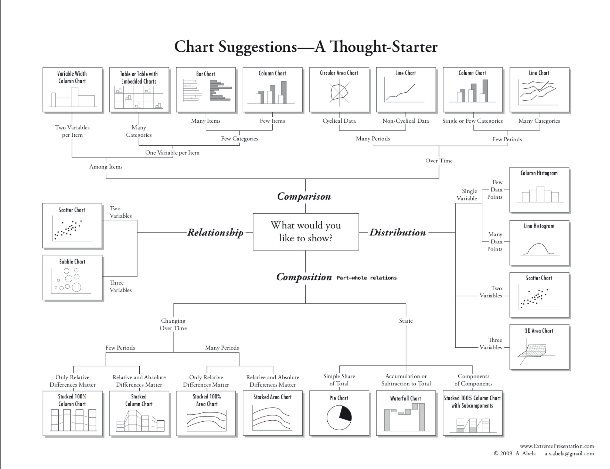
Design Aesthetics and Accessibility
While Du Bois sought to make his visualizations accessible to broad audiences, advances in universal design practices do even more to make visualizations accessible to people with diverse visual, cognitive, auditory, or motor strengths and needs. Practices include:
Keeping visuals as simple as possible, presenting only information necessary for analysis.
Color-blind friendly use of color and contrast, avoiding over-reliance on color
Alternative text (alt text) that screen readers can use to provide an audio description of images.
Descriptive titles and labels
Offering both visual and non-visual formats
Including narrative text with context and summaries
Literacy Bar Chart: a worked example
Challenge 1: Reading the Chart
- What type of graph is this?
- What variables are plotted on the chart?
- Are the variables categorical, ordinal, or interval / ratio?
- What statistics are plotted?
- Which category is highlighted?
How does Black illiteracy (the red bar) compare with other countries
- What variables are plotted: Country, Illiteracy rate
- Variable types: Country is categorical. Illiteracy rate is continous, though it is derived from person-level categorical measures (literate or not literate)
- Statistics plotted: Proportions (as percentages) of llitercy rate
- The Black illiteracy rate is highlighted.
Disucssion
How does Black illiteracy compare to literacy in other countries on the chart?
What is similar about the countries with higher illiteracy than Black illiteracy in the US?
Design Aesthetics and Accessibility
Overview
Questions
What makes the bar chart above graph easy or difficult to understand?
How is the graph aesthetically appealing? How could could it be more appealing?
How does this graph take its audience into consideration?
What tools would you need to create this graph by hand?
Objectives
- Understand which chart types are best suited for data with different levels of measurement (nominal, ordinal, continous).
- Read and interpret the analysis in one of the Du Bois charts.
- Identify best practices for chart accessibity and impact in a Du Bois chart.
- Draw a STEM chart by hand using statistics that describe real data.
This visual, a conventional bar graph, uses spot color to highlight the data for Black Americans compared to other countries, showing the illiteracy rate to be at the midpoint compared to other nations.
The chart portion is a large percentage of the canvas, simply showing the message.
Note the bilingual labels and titles (a nod to the venue and audience).
Context and Data Story
Du Bois presented his graph for illiteracy among Black Americans and other nations (left), together with the graph of Black illiteracy in Georgia from 1865 to 1900. What data story do these 2 graphs tell together?

Example: Re-Create with Modern Data and Accessible Design
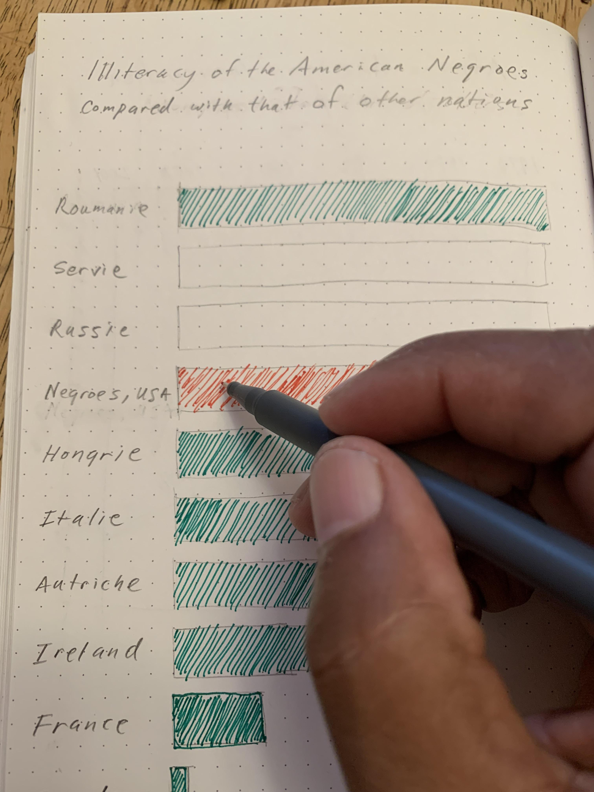
Activity: Hand draw a recreation of Du Bois’ graph using the data below on college attainment today.
Building on the graph to the left, what accessible design improvements can you make?
Data:
Country College
Russia 60
Ireland 54
Sweden 49
France 42
Black U.S.
Residents 36
Austria 36
Hungary 29
Serbia 28
Romania 20
Italy 20- Even simple chart types can convey interesting meaning. Color man be used to emphasize points
Content from Recreate a Du Bois Bar Chart
Last updated on 2026-04-08 | Edit this page
Overview
Questions
- How can I read tabular data to plot a bar graph in R?
- How can I use ggplot to organize and format a bar graph in R?
- How can I maintain a reproducible record of my data visualizations?
- How can I use color to improve accessibility of data visualizations?
Objectives
- Create bar graph variations based on historical and contemporary tabular data.
- Develop basic R code to create bar graphs.
- Use transparent, legible, and shareable record of how you created your own unique data visualizations.
- Differentiate color usage to improve legibility of findings from tabular data.
Black Literacy After Emancipation

This interactive exercise is inspired by the annual #DuBoisChallenge. The #DuBoisChallenge is a call to scientists, students, and community members to recreate, adapt, and share on social media the data visualzations created by W.E.B. Du Bois and his collaborators in 1900. Before doing the interactive exercise, please read this article about the Du Bois Challenge: https://nightingaledvs.com/the-dubois-challenge/
Presentation of the historical cross-national literacy data
Du Bois’ created many data portraits to share the story of Black Americans post-emancipation. The “Black Literacy After Emancipation” graphic at the top of this page shows mass education as one important strategy for furthering and deepining emancipation for Black Americans and others. In this workbook, you will recreate two bar plots: 1) Du Bois’ visualization of Black illiteracy rates in the US compared to illiteracy rates in other countries using 1900 data; and 2) Du Bois’ visualization using data on Black college attainment in the US today.
An important context of Du Bois’s graph of Black illiteracy is that literacy was illegal for enslaved people in the U.S. until emancipation and the Confederacy’s defeat during the Civil War. Illiteracy then declined rapidly as Black Americans sought to empower themselves through education. The Du Bois plotted this decline in illiteracy among Black residents in the state of Georgia in the figure below. They used decennial US census illiteracy rates for Georgia from 1860 to 1890 that are available here. They likely wrote “50%?” for the 1900 illiteracy rate because the Census did not publish 1900 illiteracy rates (available here) until several months after the Paris Exposition. For this exercise, we’re going to read in data from a website. And we’re going to place the data into a dataframe named d_literacy_country and d_college_country.
d_literacy_country
| column_name | Description |
|---|---|
| country | Name of country |
| illiteracy | illiteracy percentage |
How can I input tabular data to plot a bar graph in R?
The first step for data visualization in R is to read data into an R dataframe. This is like double clicking a file to open it in other computer programs. But with R, we use code.
For this exercise, we’re going to read in data from a website. And we’re going to place the data into a dataframe named d_literacy_country.
There is no record of the exact data used by the Du Bois team for this bar graph. And the Du Bois graph curiously does not include tick marks with a labeled axis scale to show what exact values each bar represents. Why? Perhaps the Du Bois team wanted to emphasize that the bar graph was a rough comparison of illiteracy rates because of varied timing, methods, and national boundaries for measuring illiteracy rates at the time. The length of the “Negroes U.S.A” bar likely represents the national Black illiteracy rate of 57.1% reported by the 1890 US Census (see reported “Russie” (Russia) bar correspond to the national US Black illiteracy rate in the 1890 US Census (see here). So our data derives illiteracy rates for other countries based on the length of each country’s bar relative to “Negroes U.S.A.” bar, presuming the “Negroes U.S.A.” bar represents 57.1%.
The R code to read in this data this uses an <- arrow
pointed at the name of the data frame and a read.csv function command
followed by the web address within parentheses where a csv (comma
separated values) data file is located. It looks like this:
R
d_literacy_country <- read.csv("web_address_with_data/data_file_name.csv")
After writing this code, we can write the name of the data frame
R
d_literacy_country
Typing just the name of the dataframe will list all of the data in the data frame.
Challenge 1: Reading the data
The web address of the data is: https://raw.githubusercontent.com/HigherEdData/Du-Bois-STEM/refs/heads/main/data/d_literacy_country.csv Update the code below using the web address above.
d_literacy_country <- reading.csv("web_address_with_data/data_file_name.csv")
d_literacy_countryR
d_literacy_country <- read.csv("https://raw.githubusercontent.com/HigherEdData/Du-Bois-STEM/refs/heads/main/data/d_literacy_country.csv")
d_literacy_country
Recreating a Bar Graph
After successfully listing the data above, you should be able to see that it has data in two columns.
Each column is a variable:
country is a country name for 10 countries with Black people in the U.S. treated as a country.
illiteracy contains percent of people in each country who are illiterate.
Before creating a bar graph of the data, we need to read the library ggplot2 and set up a couple parameters.
R
library(ggplot2)
options(repr.plot.width=22/3, repr.plot.height=28/3)
source("https://raw.githubusercontent.com/HigherEdData/Du-Bois-STEM/refs/heads/main/theme_dubois.R")
The first line of code opens the library of ggplot2.
Depending on our intention or circumstance, we adapt the size of a
graph. The second line of code tells R that we want the width and height
of the graph to have the same ratio that Du Bois used, 22 inches wide by
28 inches tall, with each divided by 3 so that it doesn’t display too
big.
The third line tells R to use a specific Du Bois style. Examining Du Bois data portraits, we can see a style of format, color, and font text.
The following code creates a simple bar graph using
R
ggplot(df, aes(x=horizon_variable, y=vertical_variable)) + geom_col()
R
library(ggplot2)
d_literacy_country <- read.csv("https://raw.githubusercontent.com/HigherEdData/Du-Bois-STEM/refs/heads/main/data/d_literacy_country.csv")
ggplot(d_literacy_country, aes(
x = country,
y = illiteracy)) +
geom_col()
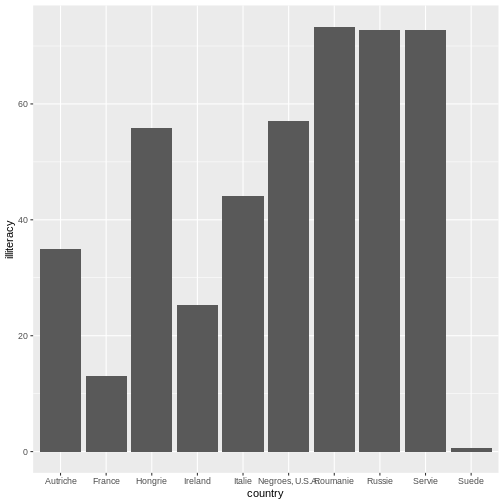
Within this expression, we set the parameters of which variable to be
placed across the horizonal (using x=variable) and vertical
axes (using y=variable). Typically, bar graphs have
categories on the horizonal axis and the values as the vertical axis.
However, there are instances where we want to create a horizonal bar
graph where categorical values are on the vertical axis and the values
are on the horizonal axis. Which bar graph did Du Bois used in Plate 47
presented at the top of the page?
Challenge 2: Horizonal Bar graph
Below is the code to make a traditional bar graph. How can you modify the code in order to make it a horizonal bar graph?
ggplot(d_literacy_country, aes(
x = country,
y = illiteracy)) +
geom_col()ggplot(d_literacy_country, aes(
x = illiteracy,
y = country)) +
geom_col() Now, our plot is starting to look more like the Du Bois original data
creation. In the code from challenge 2, the categories are on x-axis
(horizonal) and the rate/numbers are expressed on the y-axis (vertical
axis). In the challenge above, we use the ggplot2 function
to plot a horizonal bar graph of illiteracy rates across the
observations (countries and Black Americans).
In the challenge code above, we add a ggplot2 function
followed by open parentheses to tell R that we will plot data from the
d_literacy_country data frame with an “aesthetic mapping”
aes() specification that maps one column of data on the x
axis and another column of data on the y axis.
After the close parentheses that tells ggplot we want to plot
d_emancipation_dubois data with one variable on the x axis, and another
on the y axis, we add a + and then a new line of code
geom_col() that tells ggplot we want a bar graph based on
summary statistics in the dataframe.
Sorting the values & Adding color
In the bar graph you created above, can you tell what order the bars for each country are sorted by? It is ordered in alphabetical order. When we observe Du Bois PLate 47, we see Du Bois sorts the bar for each country by its illiteracy rate from highest to lowest.
Additionally, Du Bois also graphs illiteracy rate for Black Americans in a different color to make it easier to compare to other countries.
R
ggplot(d_literacy_country, aes(
x = illiteracy,
y = reorder(country, illiteracy))) +
geom_col()
Compare the code above with challenge 2, what do you notice? The code
above uses the reorder function to reorganize the country
names on the vertical axis based on illiteracy.
R
ggplot(d_literacy_country, aes(
x = illiteracy,
y = reorder(country, illiteracy),
fill = country == "Ireland"
)) +
geom_col()
Next, we the fill function to highlight a specific
country: Ireland.
Challenge 3: Reorder and specify bar color
Observing the PLate 47, what name is suppose to stand out? Update the below.
ggplot(d_literacy_country, aes(
x = illiteracy,
y = reorder(country, illiteracy),
fill = country == "Ireland"
)) +
geom_col()ggplot(d_literacy_country, aes(
x = illiteracy,
y = reorder(country, illiteracy),
fill = country == "Negroes, U.S.A."
)) +
geom_col()Adding Du Bois Theme
The style of our current figure does not quite match the original Plate 47. Can you identify 1-2 style characteristics missing? A few features missing are: bar colors, background color, and title.
Next, we will adapt the code to match the style, specifically: bar width, background color, legend, and other default ggplot elements ar different than those employed by Du Bois.
Bar width
We can easily edit the bar width by inputting numeric values within the
Try inputting .1 and .9.
Additionally, we can add theme_dubois() within
geom_col(width = #) + theme_dubois()
Challenge 4: Bar width and Du Bois theme
Add the changes we covered above.
ggplot(d_literacy_country, aes(
x = illiteracy,
y = reorder(country, illiteracy),
fill = country == "Negroes, U.S.A."
)) +
geom_col()ggplot(d_literacy_country, aes(
x = illiteracy,
y = reorder(country, illiteracy),
fill = country == "Negroes, U.S.A."
)) +
geom_col(width=.5) +
theme_dubois()Changing bar color and font to match Du Bois theme
The function scale_fill_manual() allows users to adapt
the colors of the fill based on values. Remember earlier, the legend
printed colors based on TRUE/FALSE of country == “Negroes, U.S.A.”. We
will build on that previous knowledge to adapt the code:
R
scale_fill_manual(values = c("TRUE"= "red", "FALSE" = "darkgreen"))
Changing the font to
theme(text = element_text('serif'))
Challenge 5: Changing colors and font style
Below the bar graph uses purple to high Black Americans. What color is used in Plate 47? Update the code.
ggplot(d_literacy_country, aes(
x = illiteracy,
y = reorder(country, illiteracy),
fill = country == "Negroes, U.S.A."
)) +
geom_col(width=.5) +
theme_dubois() +
scale_fill_manual(values = c("TRUE"= "purple", "FALSE" = "darkgreen"))+
theme(text = element_text('serif'))ggplot(d_literacy_country, aes(
x = illiteracy,
y = reorder(country, illiteracy),
fill = country == "Negroes, U.S.A."
)) +
geom_col(width=.5) +
theme_dubois() +
scale_fill_manual(values = c("TRUE"= "red", "FALSE" = "darkgreen"))+
theme(text = element_text('serif'))Titles
To add titles and subtitles to the graph, we use the
labs function in ggplot2. We use the title and subtitle
specifications with labs.
The title text needs to be enclosed in quotation marks. We use the
code \n to tell R to put a “new line” break at different
places in the title based on Du Bois’ titling.
Fill in the blank with your name in the title code below to show that the graph was recreated by you?
labs(
title="Graph title"
subtitle="2026"
)Challenge 6: Adding labels
Based on the Plate 47, update with your name.
ggplot(d_literacy_country, aes(
x = illiteracy,
y = reorder(country, illiteracy),
fill = country == "Negroes, U.S.A."
)) +
geom_col(width=.5) +
theme_dubois() +
scale_fill_manual(values = c("TRUE"= "red", "FALSE" = "darkgreen"))+
theme(text = element_text('serif'))+
labs(
title = "\nIlliteracy of the American Negroes compared with that of other nations.\n",
subtitle = "Proportion d' illettrés parmi les Nègres Americains comparée à celle des autres nations.\n\n
Done by Atlanta University.\n\ngit ad
Recreated by STUDENT NAME HERE\n\n"
)ggplot(d_literacy_country, aes(
x = illiteracy,
y = reorder(country, illiteracy),
fill = country == "Negroes, U.S.A."
)) +
geom_col(width=.5) +
theme_dubois() +
scale_fill_manual(values = c("TRUE"= "red", "FALSE" = "darkgreen"))+
theme(text = element_text('serif')) +
labs(
title = "\nIlliteracy of the American Negroes compared with that of other nations.\n",
subtitle = "Proportion d' illettrés parmi les Nègres Americains comparée à celle des autres nations.\n\n
Done by Atlanta University.\n\ngit ad
Recreated by STUDENT NAME HERE\n\n"
)- Learn about early Du Bois data visualization
- Use R to read tabular data
- Use ggplot2 to create graphs
- Use modern features to recreate Plate 27
Content from Adapt: Biodiversity and Redlining Bar Chart
Last updated on 2026-04-08 | Edit this page
Overview
Questions
- How can we adapt code for a previous bar chart to plot different data?
- What can go wrong when we recycle code?
- How can we refine code to fit the particular data and relationships?
Objectives
- Learn how to build off your old visualization code.
- Understand the how bar categories and statistics represented by bars shift across applications.
- Practice creative problem solving to make code fit your data and analysis.
1. Read in and check biodiversity redlining data
Now that you’ve written code to graph Du Bois’ literacy data, you can use that same code to make bar graphs of other data in the same style.
To see how this works, we will use data from an article in the Proceedings of the National Academy of Science (PNAS) here The article includes a bargraph showing lower biodiversity in neighborhoods that were redlined in the middle of the 20th century because they had large numbers of non-white residents. The home owners loan corporation (HOLC) tracked neighborhoods that would have been redlined by the Federal Housing Adminsation and local lenders, making it harder to get affordable homeloans in the neighborhood and “serving as a proxy for numerous prior and existing racialized policies at the federal, state, and local level that reinforced racial segregation, discrimination, and disinvestment” (Estian et al. 2024). The graph below uses data for the city of San Diego to show lower biodersity scores (0-100) in neighborhoods with lower A to D HOLC letter grades (indicating worse redlining treatment of neighborhoods).

To recreate the biodiversity graph in the style of Du Bois’ literacy graph, we need to first import the biodiversity data for San Diego neighborhoods from a different d_biodiversity_redlining.csv file into or df data drame.
Do do this, fill in the blank in the read.csv line of code below to use the d_biodiversity_redlining.csv file name when reading in the data from our website.
Then the line of code df to display the diversity scores by neighborhood redlining grade from the graph above.
R
df<- read.csv(
"https://raw.github.com/HigherEdData/Du-Bois-STEM/refs/heads/main/data/_____________")
df
Hints:
Make sure that you include our d_ prefix in the filename and the dataframe name along with .csv at the end of the file name.
Answer:
The first line of code should be:
R
df<-read.csv(
"https://raw.github.com/HigherEdData/Du-Bois-STEM/refs/heads/main/data/d_biodiversity_redlining.csv")
df
OUTPUT
grade biodiversity
1 A 48
2 B 24
3 C 12
4 D 42. Edit the Du Bois Graph Code to Plot the Biodiversity and Neighborhood Redlining Grade Data
After reading in the d_biodiversity_redlining.csv data, you can edit the graph code you used for the literacy code to graph the biodiversity and redlining data. Unlike the original biodiversity bar graph in the PNAS article, your code will graph the data as a horizontal bar graph.
Fill in the blanks below to:
- Change the name of the data frame you are graphing with ggplot to the d_biodiversity_redlining data frame.
- Change the x variable you are graphing from literacy to the biodiversity variable.
- Change the y variable you are graphing to the redlining grade variable.
- Add your own name for the Adapted by line.
R
{r, fig.width=11, fig.height=14}
df<- read.csv(
"https://raw.github.com/HigherEdData/Du-Bois-STEM/refs/heads/main/data/d_biodiversity_redlining.csv")
library(ggplot2)
options(repr.plot.width=22/2, repr.plot.height=28/2)
source("https://raw.githubusercontent.com/HigherEdData/Du-Bois-STEM/refs/heads/main/theme_dubois.R")
# above is code you learned in the Recreate episode for setting up R to plot Du Bois' literacy data
# 1. fill in the blank below to change the dataframe you are plotting
ggplot(____________, aes(
# 2. fill in the blanks below to graph the biodiversity variable
x = _________,
# 3. fill in the blanks to graph the grade variable
y = reorder(________, biodiversity),
fill = grade == "D" # this changes the fill statement to graph the D grade bar in Red
)) +
geom_col(width = .5) +
theme_dubois() +
theme(text = element_text('serif')) +
scale_fill_manual(values = c("TRUE" = "red", "FALSE" = "darkgreen")) +
labs(
title = "\nSan Diego Neighborhood Biodiversity Score (0-100) by Neighborhood Redlining Grade.\n",
subtitle = "Adapted by ________from Du Bois' graph of literacy in 1900 and from\n
'Historical redlining is associated with disparities in wildlife biodiversity in four California cities' (2024)\n\n"
# 4. Fill in the blank above to show the graph is adapted by you!
)
Hints:
The new dataframe name is d_biodiversity_redlining.
The x variable name is biodiversity.
Answer:
R
df<- read.csv(
"https://raw.github.com/HigherEdData/Du-Bois-STEM/refs/heads/main/data/d_biodiversity_redlining.csv")
library(ggplot2)
source("https://raw.githubusercontent.com/HigherEdData/Du-Bois-STEM/refs/heads/main/theme_dubois.R")
ggplot(df, aes(
x = biodiversity,
y = reorder(grade, biodiversity),
fill = grade == "D" # this changes the fill statement to graph the D grade bar in Red
)) +
geom_col(width = .5) +
theme_dubois() +
theme(text = element_text('serif')) +
scale_fill_manual(values = c("TRUE" = "red", "FALSE" = "darkgreen")) +
labs(
title = "\nSan Diego Neighborhood Biodiversity Score (0-100)
by Neighborhood Redlining Grade. \n",
subtitle = "Adapted by YOUR NAME from Du Bois' graph of literacy in 1900
and from 'Historical redlining is associated with disparities
in wildlife biodiversity in four California cities' (2024) \n"
)

3. Improve Accessibility by Adding X Axis Grid Lines and Removing the Use of Red and Green
Some of Du Bois’ graphing choices might not make sense for graphs you want to make. For example, Du Bois doesn’t provide labels or grid lines to make it easy to understand what the range of biodiversity scores are by neighborhood redlining grade. The code cell below adds two lines of code for adding the grid lines.
In addition, red and green bars are difficult to differentiate for those with colorblindness. Try removing the line of code below that set the bar colors to red and green. This should change the bar colors back to default orange and teal ggplot colors that are colorblind accessible.
If you want to customize the chart further to add your own style twist, try a google search or chatGPT query. For a chatGPT query, you could copy and paste the code from below and ask, how could I change this R ggplot code to change the background color to beige?
R
{r, fig.width=5.5, fig.height=7}
df<- read.csv(
"https://raw.github.com/HigherEdData/Du-Bois-STEM/refs/heads/main/data/d_biodiversity_redlining.csv")
library(ggplot2)
source("https://raw.githubusercontent.com/HigherEdData/Du-Bois-STEM/refs/heads/main/theme_dubois.R")
ggplot(df, aes(
x = biodiversity,
y = reorder(grade, biodiversity),
fill = grade == "D" # this changes the fill statement to graph the D grade bar in Red
)) +
geom_col(width = .5) +
theme_dubois() +
theme(text = element_text('serif')) +
scale_fill_manual(values = c("TRUE" = "red", "FALSE" = "darkgreen")) + ## delete this line
labs(
title = "\nSan Diego Neighborhood Biodiversity Score (0-100)
by Neighborhood Redlining Grade. \n",
subtitle = "Adapted by YOUR NAME from Du Bois' graph of literacy in 1900
and from 'Historical redlining is associated with disparities
in wildlife biodiversity in four California cities' (2024) \n"
) +
# Below is code to add grid lines with labels
scale_x_continuous(
breaks = seq(0, 60, by = 10), # Set tick positions every 10 units
) +
theme(
axis.text.x = element_text(size = 12),
panel.grid.major.x = element_line(color = "lightgray")
)Answer:
R
df<- read.csv(
"https://raw.github.com/HigherEdData/Du-Bois-STEM/refs/heads/main/data/d_biodiversity_redlining.csv")
library(ggplot2)
source("https://raw.githubusercontent.com/HigherEdData/Du-Bois-STEM/refs/heads/main/theme_dubois.R")
ggplot(df, aes(
x = biodiversity,
y = reorder(grade, biodiversity),
fill = grade == "D" # this changes the fill statement to graph the D grade bar in Red
)) +
geom_col(width = .5) +
theme_dubois() +
theme(text = element_text('serif')) +
scale_fill_manual(values = c("TRUE" = "red", "FALSE" = "darkgreen")) + ## delete this line
labs(
title = "\nSan Diego Neighborhood Biodiversity Score (0-100)
by Neighborhood Redlining Grade. \n",
subtitle = "Adapted by YOUR NAME from Du Bois' graph of literacy in 1900
and from 'Historical redlining is associated with disparities
in wildlife biodiversity in four California cities' (2024) \n"
) +
# Below is code to add grid lines with labels
scale_x_continuous(
breaks = seq(0, 60, by = 10), # Set tick positions every 10 units
) +
theme(
axis.text.x = element_text(size = 12),
panel.grid.major.x = element_line(color = "lightgray")
)
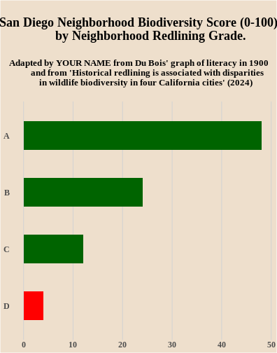
Content from AI assisted plotting with R
Last updated on 2026-04-09 | Edit this page
Overview
Questions
- What are potential accessibility benefits of AI for data visualization?
- How can you use AI in ways that improve your comprehension of visualizations and code?
- What are risks of using AI to help you do visualizations?
Objectives
- Recreate the biodiversity and racial redlining bar chart from PNAS.
- Use key statistical and visualization concepts when employing AI to help you write R code
- Test and save the code using R Studio or Jupyter Lite.
A. Biodiversity and redlining bar chart revisited.
In the previous episode, we learned how to adapt the code we wrote for the Du Bois literacy bar chart to recreate a bar chart of biodiversity data in the Du Bois style.
We’re going to recreate the bar chart again by using AI to:
- write R code for generating the chart in the Du Boisian style.
- write comments explaining the code in the chart.
- gain an understanding of the chart by manually deleting portions of the code to make the graph simpler, and debugging problems that arise when we delete necessary parts of the code.
As noted in the prior episode, the biodiversity bar chart below comes from an article in the Proceedings of the National Academy of Science (PNAS) here The bar chart shows lower biodiversity in San Diego neighborhoods that were redlined in the middle of the 20th century because they had large numbers of non-white residents. The home owners loan corporation (HOLC) tracked neighborhoods that would have been redlined by the Federal Housing Adminsation and local lenders, making it harder to get affordable homeloans in the neighborhood and “serving as a proxy for numerous prior and existing racialized policies at the federal, state, and local level that reinforced racial segregation, discrimination, and disinvestment” (Estian et al. 2024). The chart shows lower biodersity scores (0-100) in neighborhoods with lower A to D HOLC letter grades (indicating worse redlining treatment of neighborhoods).
B. Potential benefits and risks in AI assisted visualization
Potential benefits from AI are possible from ways it can make computational visualization more accessible to beginners who do not yet know a language like R:
- The latest AI tools allow us to write commands for AI models using natural language. So when we write an AI prompt, it’s like writing code but in the language we use in everyday discussion.
- AI will often carry out natural language prompts using the same languages we use for data visualization like R and Python.
Major risks also exist when using AI for data visualization:
- While AI models can generate reproduceable visualizations, they require consistent natural language commands based in an understanding of visualization practices and statistics. Even then, AI can produce inconsistent and incorrect results.
- It’s always important to check results from AI by requesting and reviewing code in R that shows how a visualization is created.
- If one does not know fundamental statistical or programming concepts, it is difficult or impossible to check the reliability of AI generated code and charts.
C. An epic fail without fundamental concepts
To see the risk of using AI without knowledge of key concepts, we’ll ask AI tools to help recreate the biodiversity chart:
- Open ChatGPT, Claude, or Gemini in another browser window.
- Right click the image above and paste it into the AI chat.
- Write and submit the command below in the chat, copy and past the url for our data.
AI Prompt: give me code for generating a bar chart in R using only the tidyverse library with this data: https://raw.githubusercontent.com/HigherEdData/Du-Bois-STEM/main/data/d_biodiversity_redlining.csv
Next, copy and paste the code into an .Rmd file or your JupyterLite Notebook.
After running the code, click the dropdown below to see if you get the same code and epic failure of a result that we did.
Note, if you are using Jupyter Lite and AI suggests using
read_csv, instead use read.csv.
Code and results ChatGPT gave the authors:
R
library(tidyverse)
OUTPUT
── Attaching core tidyverse packages ──────────────────────── tidyverse 2.0.0 ──
✔ dplyr 1.2.0 ✔ readr 2.2.0
✔ forcats 1.0.1 ✔ stringr 1.6.0
✔ ggplot2 4.0.2 ✔ tibble 3.3.1
✔ lubridate 1.9.5 ✔ tidyr 1.3.2
✔ purrr 1.2.1
── Conflicts ────────────────────────────────────────── tidyverse_conflicts() ──
✖ dplyr::filter() masks stats::filter()
✖ dplyr::lag() masks stats::lag()
ℹ Use the conflicted package (<http://conflicted.r-lib.org/>) to force all conflicts to become errorsR
df <- read.csv("https://raw.githubusercontent.com/HigherEdData/Du-Bois-STEM/main/data/d_biodiversity_redlining.csv")
df %>%
count(grade) %>%
ggplot(aes(x = grade, y = n)) +
geom_col(fill = "steelblue") +
labs(x = "Grade", y = "Count") +
theme_minimal()
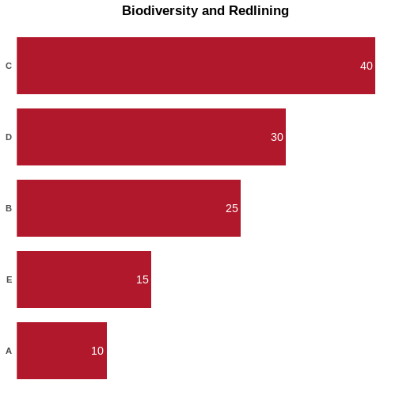
D. Using concepts for better natural language prompts
To use AI to reproduce the original graph, we need to write a natural language prompt that better communicates the content of our data. This requires some key concepts in statistics and graphing, namely that bar heights typically represent a statistical measure of a variable within different categories. But what statistical measure?
Look at the data from the csv as reported in the ChatGPT output. Or
check it yourself by using df to print the full data frame.
Then think about these questions:
- What data is contained in each row of the grade column and the biodiversity column?
- How does the original chart represent this data?
- How does the ChatGPT chart treat the data differently than the original chart above?
- What clue does the R code from ChatGPT provide about the statistic it is plotting?
- What is a better AI prompt for generating R code?
Click here for some answers:
The data in the csv collapses the author’s original data into four observations, one for each HOLC redlining letter grade. The biodiversity column then contains the mean biodiversity score for each neighborhood receiving one of the four letter grades.
The original bar chart plots a bar with a bar height corresponding to the mean biodiversity score for each letter grade.
ChatGPT instead assumed that we were plotting bars that represent a count of how many observations there were for each letter grade – 1 for each letter grade.
Try a revised prompt that communicates the form of the data and the statistics that bars should represent.
AI prompt: treat the biodiversity column values as the the height of the bar. they represent the mean biodiversity score.
Don’t just try the code AI gives you back, but also read its supporting explanations to see if they make sense.
ChatGPT provided the authors with this code and result that more closely resembles the original graph:
R
library(tidyverse)
# load data
df <- read.csv("https://raw.githubusercontent.com/HigherEdData/Du-Bois-STEM/main/data/d_biodiversity_redlining.csv")
# check column names
glimpse(df)
OUTPUT
Rows: 4
Columns: 2
$ grade <chr> "A", "B", "C", "D"
$ biodiversity <int> 48, 24, 12, 4R
# bar chart: biodiversity values as bar height
df %>%
ggplot(aes(
x = reorder(grade, biodiversity), # grouping variable
y = biodiversity # mean biodiversity score
)) +
geom_col(fill = "steelblue") +
labs(
title = "Mean Biodiversity Score by Redlining Grade",
x = "Redlining Grade",
y = "Mean Biodiversity Score"
) +
theme_minimal()
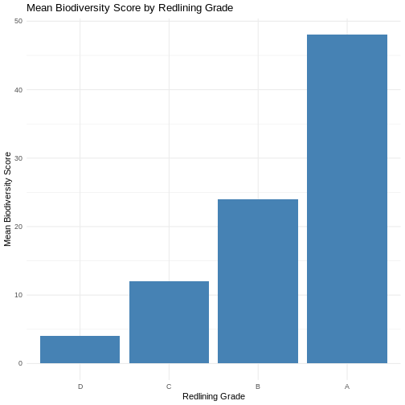
E. Add comments that explain what the code does
Once you think the code has the fundamentals right, you can use AI to help explain what each line of code does to help you read through the code and make sure you understand what it’s doing.
Let’s combine this with a small fix to the bar ordering in the prior graph:
AI Prompt: Change the order of the bars so that they are in order of grade from A to D. Add commentsthat explain what is done by each line R code for the graph.
Click to see the commented code ChatGPT gave us back:
R
# load the tidyverse (includes ggplot2, dplyr, readr, etc.)
library(tidyverse)
# read the CSV file directly from the provided URL into a dataframe
df <- read.csv("https://raw.githubusercontent.com/HigherEdData/Du-Bois-STEM/main/data/d_biodiversity_redlining.csv")
# inspect the structure of the dataset to confirm column names and types
glimpse(df)
OUTPUT
Rows: 4
Columns: 2
$ grade <chr> "A", "B", "C", "D"
$ biodiversity <int> 48, 24, 12, 4R
# convert the grade column into an ordered factor so bars appear A → D
df <- df %>%
mutate(
grade = factor(grade, levels = c("A", "B", "C", "D"))
)
# create the bar chart
df %>%
ggplot(aes(
x = grade, # place redlining grade on the x-axis
y = biodiversity # use biodiversity values as bar height (mean scores)
)) +
geom_col( # create bars with heights equal to y values
fill = "steelblue" # set bar color
) +
labs(
title = "Mean Biodiversity Score by Redlining Grade", # chart title
x = "Redlining Grade", # x-axis label
y = "Mean Biodiversity Score" # y-axis label
) +
theme_minimal() # apply a clean, minimal theme
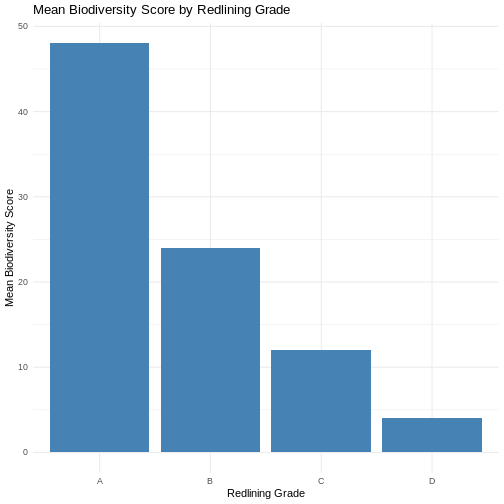
F. Learn by commenting out unnecessary code.
Legible code is succinct code. You can better learn what different parts of this code do by commenting out lines that you think are unnecessary. In R, we do this by adding the # comment symbol before a line of code.
Then you can debug errors this creates or delete the # to restore the code.
Sometimes, different lines of code are connected to each other. So if you comment out or change a line of code, you have to change another.
What do you think can be just commented out without breaking other essential code?
What we comment out:
If you try commenting out this code, you’ll find it’s totally unnecessary.
R
# convert the grade column into an ordered factor so bars appear A → D
df <- df %>%
mutate(
grade = factor(grade, levels = c("A", "B", "C", "D"))
)
G. Using AI for stylization
Once you have R code for a chart with fundamentals you understand, you will be on stronger footing to ask AI to help modify your code and graph in a particular style.
Copy and paste your code into the prompt and try this:
AI prompt: revise this code to make the chart in the Du Bois style described in the Du Bois visualization tool kit.
AI prompt: revise this code to make the chart according to Kieran Healy’s best practices of making figures
ChatGPT response authors got for Du Bois style:
Chat GPT really wants to put back in extraneous mutation code.
To get more Du Boisian, you would need to direct AI to make more changes like using horizontal bars and the tall poster aspect ratio of Du Bois’ original posters.
R
# load tidyverse
library(tidyverse)
# read data (use read_csv for tidyverse consistency)
df <- read.csv("https://raw.githubusercontent.com/HigherEdData/Du-Bois-STEM/main/data/d_biodiversity_redlining.csv")
# inspect structure
glimpse(df)
OUTPUT
Rows: 4
Columns: 2
$ grade <chr> "A", "B", "C", "D"
$ biodiversity <int> 48, 24, 12, 4R
# ensure grade is ordered
df <- df %>%
mutate(grade = factor(grade, levels = c("A", "B", "C", "D")))
# summarize biodiversity by grade (important!)
summary_df <- df %>%
group_by(grade) %>%
summarize(mean_biodiversity = mean(biodiversity, na.rm = TRUE))
# Du Bois–style bar chart
ggplot(summary_df, aes(x = grade, y = mean_biodiversity, fill = grade)) +
geom_col(
width = 0.65,
color = "black",
linewidth = 1.2
) +
geom_text(
aes(label = round(mean_biodiversity, 1)),
vjust = -0.6,
family = "serif",
size = 5
) +
scale_fill_manual(values = c(
"A" = "#2A9D8F", # teal
"B" = "#E9C46A", # gold
"C" = "#F4A261", # orange
"D" = "#E63946" # red
)) +
labs(
title = "Biodiversity by Redlining Grade",
subtitle = "A Du Bois–Inspired Visualization",
x = NULL,
y = NULL
) +
theme(
# warm background (key Du Bois look)
plot.background = element_rect(fill = "#F5E6C8", color = NA),
panel.background = element_rect(fill = "#F5E6C8", color = NA),
# remove gridlines completely
panel.grid = element_blank(),
# bold, centered titles
plot.title = element_text(
family = "serif",
face = "bold",
size = 20,
hjust = 0.5
),
plot.subtitle = element_text(
family = "serif",
size = 13,
hjust = 0.5
),
# x-axis styling (bold category labels)
axis.text.x = element_text(
family = "serif",
face = "bold",
size = 14
),
# remove y-axis text/ticks for cleaner look
axis.text.y = element_blank(),
axis.ticks = element_blank(),
# emphasize baseline only
axis.line.x = element_line(color = "black", linewidth = 1.2),
# remove legend (color already encoded in x)
legend.position = "none"
)
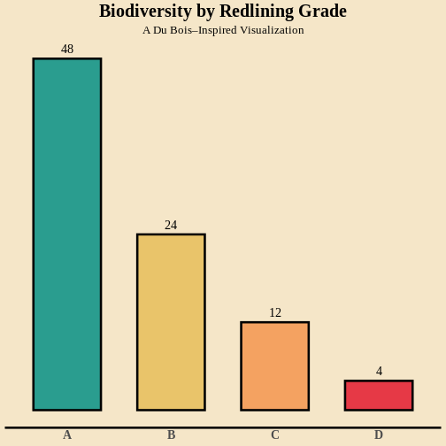
ChatGPT response authors got for Healy style::
Healy prompt adds some notes on sourcing and explanation. ChatGPT again adds unnecessary code to summarize the data rather than plot the data as is.
R
# load tidyverse
library(tidyverse)
# read data
df <- read_csv("https://raw.githubusercontent.com/HigherEdData/Du-Bois-STEM/main/data/d_biodiversity_redlining.csv")
OUTPUT
Rows: 4 Columns: 2
── Column specification ────────────────────────────────────────────────────────
Delimiter: ","
chr (1): grade
dbl (1): biodiversity
ℹ Use `spec()` to retrieve the full column specification for this data.
ℹ Specify the column types or set `show_col_types = FALSE` to quiet this message.R
# check structure
glimpse(df)
OUTPUT
Rows: 4
Columns: 2
$ grade <chr> "A", "B", "C", "D"
$ biodiversity <dbl> 48, 24, 12, 4R
# clean + summarize data properly
summary_df <- df %>%
mutate(grade = factor(grade, levels = c("A", "B", "C", "D"))) %>%
group_by(grade) %>%
summarize(
mean_biodiversity = mean(biodiversity, na.rm = TRUE),
.groups = "drop"
)
# plot using Healy-style best practices
ggplot(summary_df, aes(x = grade, y = mean_biodiversity)) +
geom_col(fill = "gray30", width = 0.7) +
labs(
title = "Mean Biodiversity Score by Redlining Grade",
subtitle = "Average biodiversity decreases from A to D graded neighborhoods",
x = "HOLC Redlining Grade",
y = "Mean Biodiversity Score",
caption = "Source: HigherEdData Du Bois STEM dataset"
) +
theme_minimal(base_size = 12) +
theme(
# improve readability
plot.title = element_text(face = "bold"),
plot.subtitle = element_text(margin = margin(b = 10)),
# keep useful gridlines, remove clutter
panel.grid.minor = element_blank(),
# clearer axis text
axis.text.x = element_text(face = "bold"),
# better spacing
plot.caption = element_text(size = 9, color = "gray40")
)
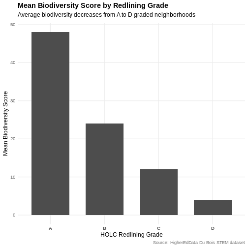
- Using AI without fundamental statistics and visualization concepts can lead to epic fails
- Using key visualization and statistics concepts for better natural language prompts
- AI can add comments that explain what the code does - read them
- Delete code that might be unnecessary to simplify code and only use code you can understand